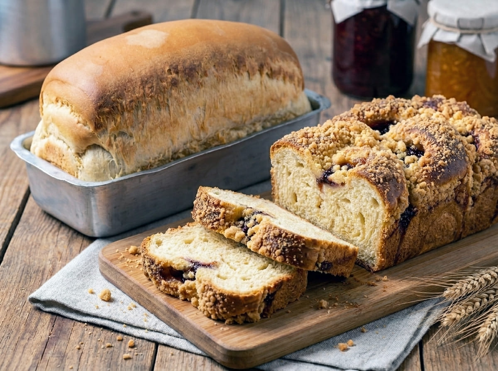
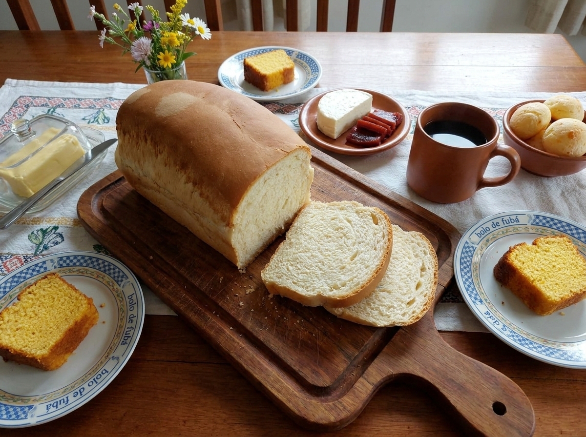
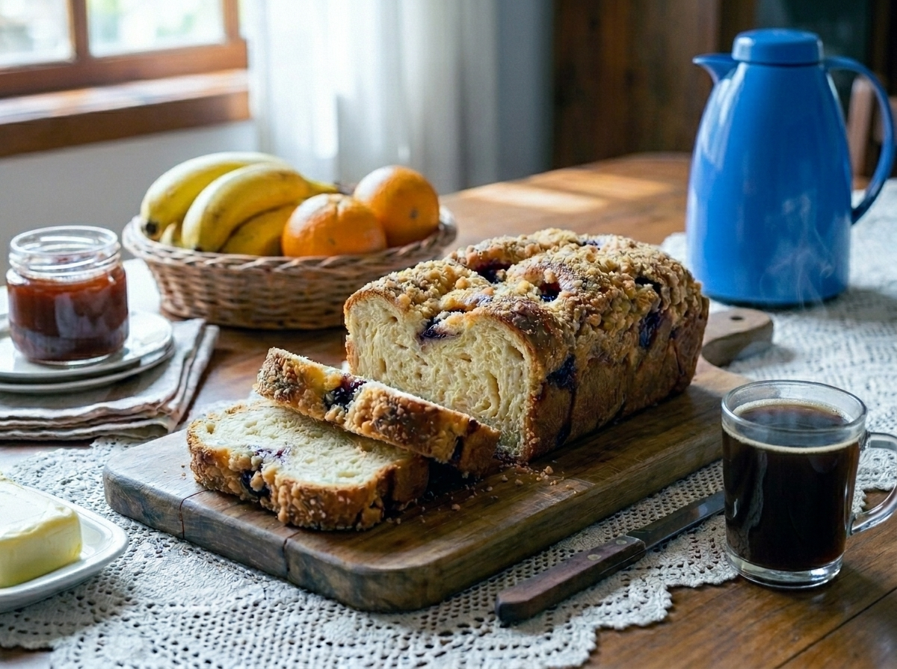

Feitos com carinho, ingredientes selecionados e aquele sabor de casa que você não esquece.

Macio por dentro, casquinha dourada por fora
💰 A partir de R$ 15,00
Massa fofinha com cobertura crocante irresistível
💰 A partir de R$ 22,00"Sabe aquele cheirinho de pão saindo do forno? É exatamente isso que você vai sentir ao abrir seu pedido."
1. Escolha
2. Clique no WhatsApp
3. Faça o pedido
4. Receba fresquinho
Produção local
Entregas em Vilhena e região
Pedidos até as 16h